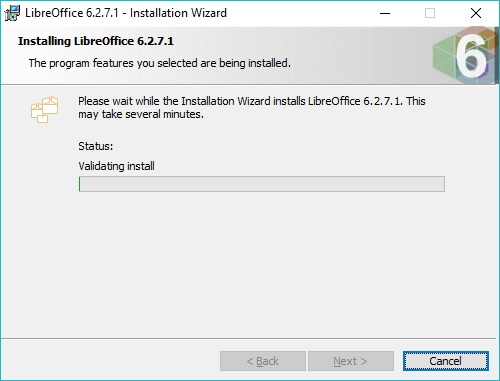

Cómo instalar Libre Office en Windows y Linux
Primero hay que descargar la versión adecuada para el sistema operativo
En Windows:
Ejecutar el archivo .msi que es el instalador para windows y seguir los pasos:

Y hemos logrado instalar Libre Office 6 en Windows
En Linux:
Abrir una terminal en el directorio de descargas (o navegar hacia el) y correr el siguiente comando para ejecutar el .deb descargado (Ver. Para Linux Mint):
Codigo para navegar al directorio:
cd ~/Downloads/LibreOffice_6.2.x_Linux_x86-64_deb/DEBS
Codigo para instalar los paquetes deb:
sudo dpkg -i *.deb
Y listo, el programa termina de instalarse y es lo unico que tenemos que hacer.
Adicionalmente hay que correr el comando:
sudo apt-get update
Y hemos logrado instalar Libre Office 6 en Linux